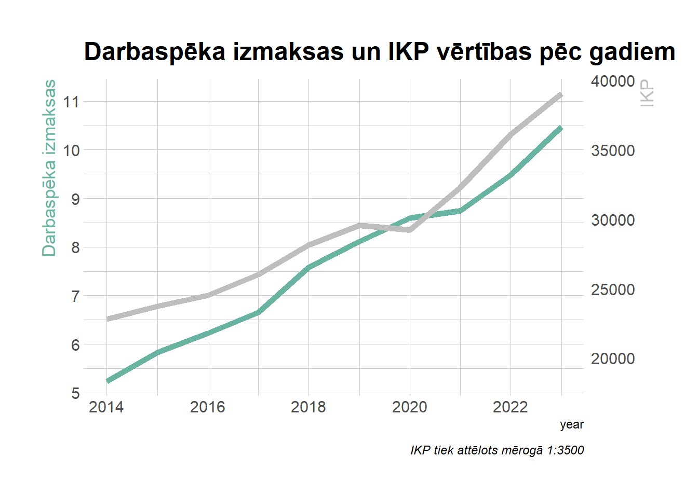
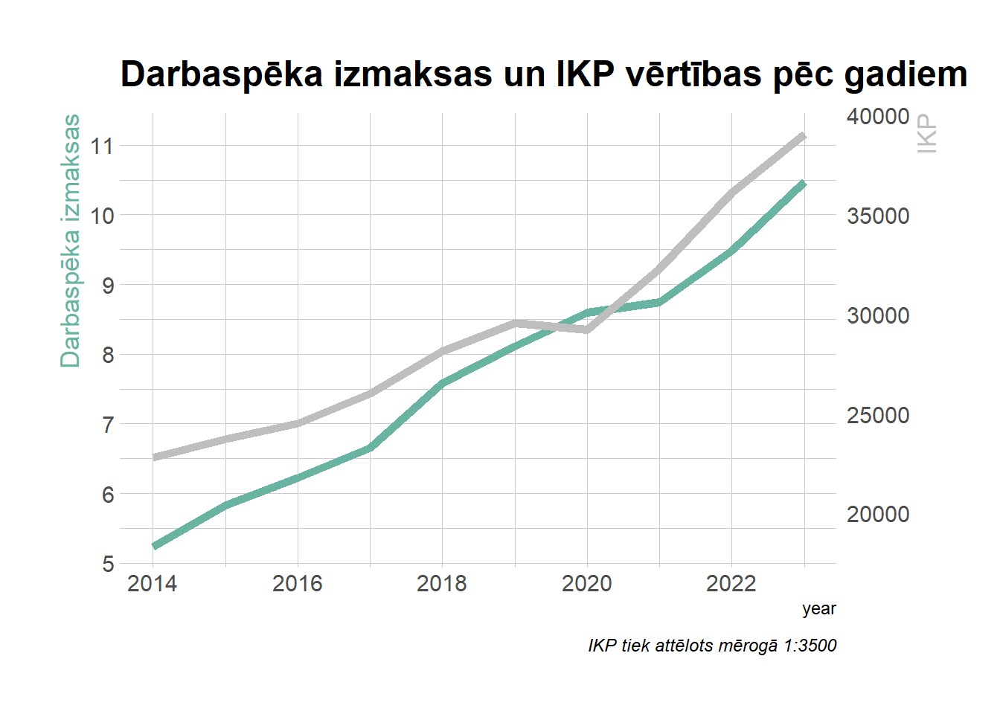
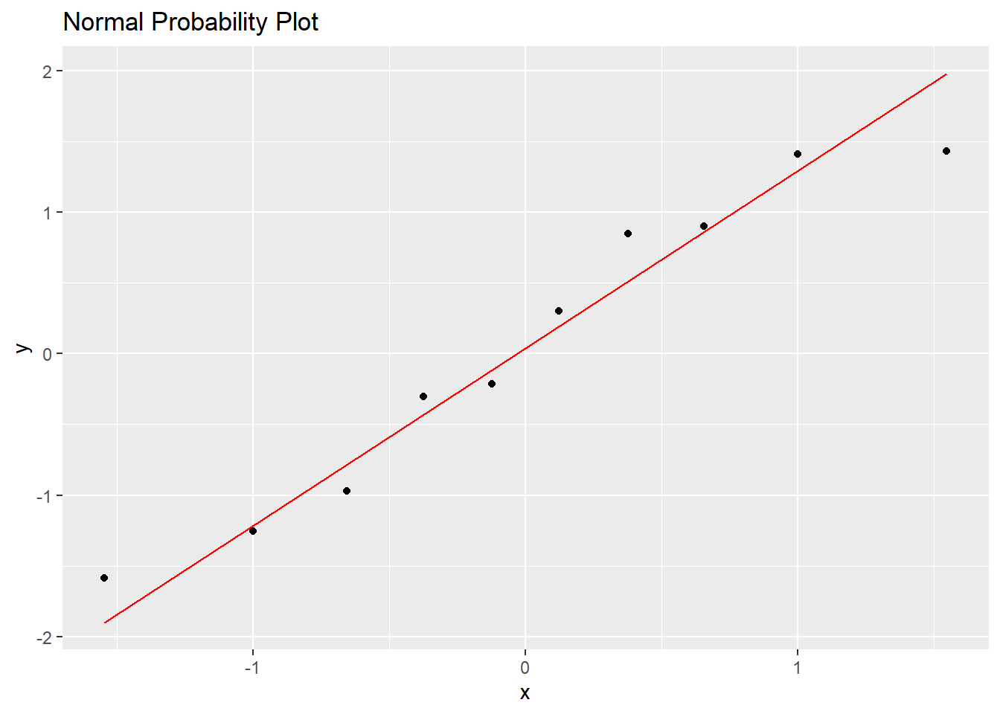

| year | di_value | ikp_value |
|---|---|---|
| 2014 | 5.23 | 22791 |
| 2015 | 5.83 | 23744 |
| 2016 | 6.23 | 24498 |
| 2017 | 6.65 | 26017 |
| 2018 | 7.58 | 28153 |
| 2019 | 8.11 | 29567 |
| 2020 | 8.60 | 29224 |
| 2021 | 8.75 | 32285 |
| 2022 | 9.48 | 36104 |
| 2023 | 10.48 | 39072 |

Autors : Kirils Volobujevs
Vienas stundas darbaspēka izmaksas pa darbības veidiem (eiro) 2005 - 2023
Iekšzemes kopprodukts pavisam, uz vienu iedzīvotāju un uz vienu nodarbināto 1995 - 2023
| year | di_value | ikp_value |
|---|---|---|
| 2014 | 5.23 | 22791 |
| 2015 | 5.83 | 23744 |
| 2016 | 6.23 | 24498 |
| 2017 | 6.65 | 26017 |
| 2018 | 7.58 | 28153 |
| 2019 | 8.11 | 29567 |
| 2020 | 8.60 | 29224 |
| 2021 | 8.75 | 32285 |
| 2022 | 9.48 | 36104 |
| 2023 | 10.48 | 39072 |

# 2. Time Series Plots using ggplot2
# DI Values Plot
ggplot(merged_data, aes(x = year, y = di_value)) +
geom_line(color = "blue", size = 1) +
geom_point(color = "blue") +
labs(title = "DI Values Over Time", x = "Year", y = "DI Value") +
theme_minimal()
# IKP Values Plot
ggplot(merged_data, aes(x = year, y = ikp_value)) +
geom_line(color = "red", size = 1) +
geom_point(color = "red") +
labs(title = "IKP Values Over Time", x = "Year", y = "IKP Value") +
theme_minimal()# 3. Correlation and Regression
correlation_result <- cor(merged_data$di_value, merged_data$ikp_value)
regression_model <- lm(ikp_value ~ di_value, data = merged_data)
# 4. Probability Plots using ggplot2
# Normal Probability Plot
ggplot(data = data.frame(residuals = rstandard(regression_model)), aes(sample = residuals)) +
stat_qq() +
stat_qq_line(color = "red") +
labs(title = "Normal Probability Plot")# Density Plot for IKP values
ggplot(merged_data, aes(x = ikp_value)) +
geom_density(fill = "lightblue", alpha = 0.5) +
labs(title = "Probability Density of IKP", x = "IKP Value", y = "Density") +
theme_minimal()# 5. Forecasting with ggplot2
# Forecast results using auto.arima
ts_data <- ts(merged_data$ikp_value, start = min(merged_data$year))
forecast_result <- forecast(auto.arima(ts_data), h = 3, level = 95)
# Prepare forecast data
forecast_df <- data.frame(
Year = c(merged_data$year,
(max(merged_data$year) + 1):(max(merged_data$year) + 3)),
Forecast = c(merged_data$ikp_value, forecast_result$mean),
Lower_CI = c(rep(NA, nrow(merged_data)), forecast_result$lower[,1]),
Upper_CI = c(rep(NA, nrow(merged_data)), forecast_result$upper[,1])
)
# Forecast Table
kable(forecast_df,
caption = "IKP Forecast with Confidence Intervals",
format = "pipe") %>%
kable_styling()| Year | Forecast | Lower_CI | Upper_CI |
|---|---|---|---|
| 2014 | 22791 | NA | NA |
| 2015 | 23744 | NA | NA |
| 2016 | 24498 | NA | NA |
| 2017 | 26017 | NA | NA |
| 2018 | 28153 | NA | NA |
| 2019 | 29567 | NA | NA |
| 2020 | 29224 | NA | NA |
| 2021 | 32285 | NA | NA |
| 2022 | 36104 | NA | NA |
| 2023 | 39072 | NA | NA |
| 2024 | 40881 | 38309.11 | 43452.89 |
| 2025 | 42690 | 39052.80 | 46327.20 |
| 2026 | 44499 | 40044.35 | 48953.65 |
# Forecast Plot using ggplot2
ggplot(forecast_df, aes(x = Year, y = Forecast)) +
geom_line(color = "darkgreen", size = 1) +
geom_point(color = "darkgreen") +
geom_ribbon(aes(ymin = Lower_CI, ymax = Upper_CI), fill = "lightgreen", alpha = 0.5) +
labs(title = "IKP Forecast with 95% Confidence Interval", x = "Year", y = "IKP Value") +
theme_minimal()
# 6. Statistical Results
cat("Correlation Coefficient:", correlation_result, "\n\n")Correlation Coefficient: 0.9723517 # Regression
print("Regression Summary:")[1] "Regression Summary:"print(summary(regression_model))
Call:
lm(formula = ikp_value ~ di_value, data = merged_data)
Residuals:
Min 1Q Median 3Q Max
-2709.45 -516.89 -12.96 1004.41 1462.60
Coefficients:
Estimate Std. Error t value Pr(>|t|)
(Intercept) 5469.4 2053.8 2.663 0.0287 *
di_value 3077.2 261.3 11.777 2.47e-06 ***
---
Signif. codes: 0 '***' 0.001 '**' 0.01 '*' 0.05 '.' 0.1 ' ' 1
Residual standard error: 1329 on 8 degrees of freedom
Multiple R-squared: 0.9455, Adjusted R-squared: 0.9387
F-statistic: 138.7 on 1 and 8 DF, p-value: 2.473e-06# ANOVA
print("\nANOVA Results:")[1] "\nANOVA Results:"print(anova(regression_model))Analysis of Variance Table
Response: ikp_value
Df Sum Sq Mean Sq F value Pr(>F)
di_value 1 244804419 244804419 138.7 2.473e-06 ***
Residuals 8 14119688 1764961
---
Signif. codes: 0 '***' 0.001 '**' 0.01 '*' 0.05 '.' 0.1 ' ' 1# Load required libraries
library(stats)
library(forecast)
library(knitr)
library(kableExtra)
library(ggplot2)
# Dataset
di <- data.frame(
year = 2014:2023,
di_value = c(5.23, 5.83, 6.23, 6.65, 7.58, 8.11, 8.60, 8.75, 9.48, 10.48)
)
ikp <- data.frame(
year = 2014:2023,
ikp_value = c(22791, 23744, 24498, 26017, 28153, 29567, 29224, 32285, 36104, 39072)
)
# Merge data frames by year (IKP just for analysis, not included in forecast)
merged_data <- merge(di, ikp, by = "year")
# 1. Combine Time Series Plot for DI and IKP Values Over Time
ggplot() +
geom_line(data = merged_data, aes(x = year, y = di_value), color = "blue", size = 1, linetype = "solid") +
geom_point(data = merged_data, aes(x = year, y = di_value), color = "blue") +
labs(title = "DI Values Over Time", x = "Year", y = "DI Value") +
theme_minimal()# 2. Combine Probability Density Plots for DI and IKP Values
ggplot() +
geom_density(data = merged_data, aes(x = di_value), fill = "blue", alpha = 0.5) +
geom_density(data = merged_data, aes(x = ikp_value), fill = "red", alpha = 0.5) +
labs(title = "Probability Density of DI and IKP Values", x = "Value", y = "Density") +
theme_minimal()# 3. Correlation and Regression Analysis (DI vs IKP)
correlation_result <- cor(merged_data$di_value, merged_data$ikp_value)
regression_model <- lm(ikp_value ~ di_value, data = merged_data)
# ANOVA for the regression model
anova_result <- anova(regression_model)
cat("\nANOVA Results for DI vs IKP regression:\n")
ANOVA Results for DI vs IKP regression:print(anova_result)Analysis of Variance Table
Response: ikp_value
Df Sum Sq Mean Sq F value Pr(>F)
di_value 1 244804419 244804419 138.7 2.473e-06 ***
Residuals 8 14119688 1764961
---
Signif. codes: 0 '***' 0.001 '**' 0.01 '*' 0.05 '.' 0.1 ' ' 1# 4. Forecasting DI with ARIMA Model
# ARIMA model applied to DI data
ts_di <- ts(merged_data$di_value, start = min(merged_data$year))
forecast_di_result <- forecast(auto.arima(ts_di), h = 3, level = 95)
# Prepare forecast data for DI
forecast_di_df <- data.frame(
Year = c(merged_data$year,
(max(merged_data$year) + 1):(max(merged_data$year) + 3)),
Forecast_DI = c(merged_data$di_value, forecast_di_result$mean),
Lower_CI_DI = c(rep(NA, nrow(merged_data)), forecast_di_result$lower[,1]),
Upper_CI_DI = c(rep(NA, nrow(merged_data)), forecast_di_result$upper[,1])
)
# Forecast Table for DI
kable(forecast_di_df,
caption = "DI Forecast with Confidence Intervals",
format = "pipe") %>%
kable_styling()| Year | Forecast_DI | Lower_CI_DI | Upper_CI_DI |
|---|---|---|---|
| 2014 | 5.23000 | NA | NA |
| 2015 | 5.83000 | NA | NA |
| 2016 | 6.23000 | NA | NA |
| 2017 | 6.65000 | NA | NA |
| 2018 | 7.58000 | NA | NA |
| 2019 | 8.11000 | NA | NA |
| 2020 | 8.60000 | NA | NA |
| 2021 | 8.75000 | NA | NA |
| 2022 | 9.48000 | NA | NA |
| 2023 | 10.48000 | NA | NA |
| 2024 | 11.06333 | 10.53778 | 11.58889 |
| 2025 | 11.64667 | 10.90342 | 12.38992 |
| 2026 | 12.23000 | 11.31971 | 13.14029 |
# 5. Forecast Plot for DI with UCL/LCL
ggplot(forecast_di_df, aes(x = Year)) +
geom_line(data = merged_data, aes(x = year, y = di_value), color = "blue", size = 1) + # Original DI line
geom_point(data = merged_data, aes(x = year, y = di_value), color = "blue") + # Original DI points
geom_line(aes(y = Forecast_DI), color = "darkgreen", size = 1) + # Forecasted DI line
geom_point(aes(y = Forecast_DI), color = "darkgreen") + # Forecasted DI points
geom_ribbon(aes(ymin = Lower_CI_DI, ymax = Upper_CI_DI), fill = "lightgreen", alpha = 0.5) + # Confidence interval for DI
labs(title = "DI Forecast with 95% Confidence Interval (UCL/LCL)", x = "Year", y = "DI Value") +
theme_minimal()